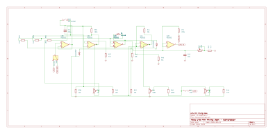

Sheet 5
The sidechain
The part that decides how much compression to apply. It measures the output, compares it to a threshold, and produces the DC control voltage that drives the gain cell.

The chain, stage by stage
1. Source select and buffer
SW2 chooses between the module's own output (SIG-VCA) and the
external key input. U6B buffers whichever you picked so the following controls do
not load the source.
2. The sidechain high-pass filter
C14 (220 nF) with R38 (10 kΩ) makes a high-pass filter at
about 72 Hz, which SW3 can short out.
This exists because bass carries most of the energy in music. Without it, every kick drum hit pulls the whole mix down and the compressor "pumps" to the beat. Rolling the bass out of the detector only — the audio path is untouched — makes the compressor respond to the overall balance instead of to the low end.
3. Threshold
RV3 (1 MΩ) is wired as a rheostat: a variable resistor
feeding U3A, whose gain is R36 / (R35 + RV3). Turning it up increases
the detector's gain, so a quieter signal is enough to start compression — which is what
lowering a threshold means.
Wiring it this way is deliberate. Because gain is inversely proportional to resistance, a plain linear pot produces a roughly logarithmic sweep in dB, which is what feels natural on the knob. The usable range is about −20 dBu to +14 dBu.
4. The precision rectifier
To measure loudness you need the size of the signal regardless of sign — its absolute value. A plain diode cannot do this at audio levels, because it needs about 0.6 V before it conducts at all and anything smaller vanishes.
The fix is to put the diodes inside an op amp's feedback loop. U3B
with D5 and D6 forms a half-wave rectifier whose op amp simply drives
harder to overcome the diode drop, so the law holds down to millivolts. U4A then
sums the half-wave result at twice the weight of the original signal, and the arithmetic works
out to a clean full-wave absolute value at RECT.
Full-wave rather than half-wave matters because it doubles the ripple frequency, which makes the ripple easier to smooth away in the next stage without slowing the compressor down.
5. Ratio
RV4 (100 kΩ) is a plain divider on the rectifier output. It sets how much
control voltage reaches the gain cell for a given amount of signal — in other words, how
many dB of gain reduction you get per dB over threshold. That is what "ratio" means.
6. Attack and release
This is where the compressor gets its timing. C15 (10 µF) is the
timing capacitor, and its voltage is the control signal.
| Control | Path | Time constant |
|---|---|---|
| Attack | RV5 4k7 + R46 47 Ω + R45 220 Ω, through D7 into C15 | 2.7 ms – 50 ms |
| Release | RV6 220 kΩ + R47 4k7 discharging C15 to ground | 47 ms – 2.2 s |
D7 is what separates the two. Charging current can only flow into the capacitor
through the diode, so the attack path is the diode plus the attack resistor. Discharge
cannot flow back through the diode, so it has to go through the release resistor instead. One
diode gives you two independent time constants.
Short attack catches transients but sounds aggressive; long attack lets the initial hit through and sounds punchier. Short release recovers quickly but can pump audibly; long release is smoother but can leave the signal held down after a loud passage.
7. Control buffer
U4B buffers the timing capacitor. Its job is to read the capacitor's voltage
without discharging it. R74 (220 kΩ) in the feedback path is chosen to match
the release network's resistance, so the op amp's small input bias current produces an equal
error on both inputs and cancels rather than shifting the resting point.
The one place worth deviating from NE5532
An NE5532's inputs draw around 200 nA. On a 220 kΩ timing node that can leave enough offset to hold the compressor in about a decibel of gain reduction at idle. Fitting a TL072 or OPA2134 for U4 only — both pin-compatible — removes the problem entirely, because FET inputs draw essentially no current.
Stereo link
SW4 connects the detector node to pin 6. With two modules linked, each
detector sees the average of both channels, so they always apply identical gain
reduction. Without linking, a loud sound on one side only would pull that side down and shift
the stereo image sideways.
Set attack and release the same on both modules when linked.